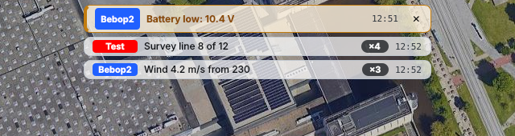
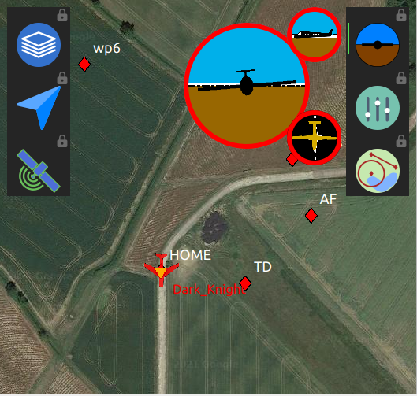
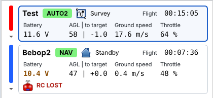
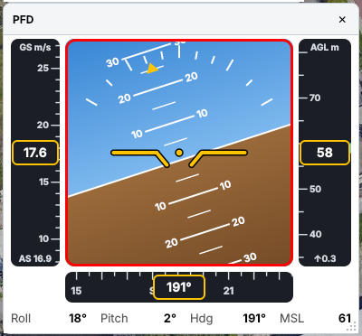
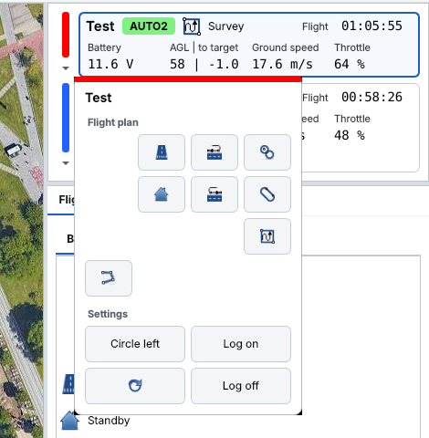
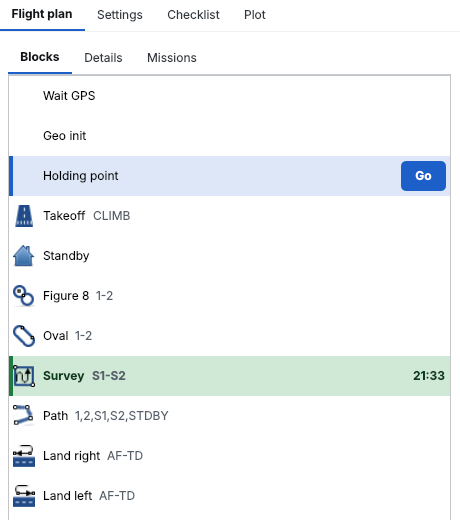
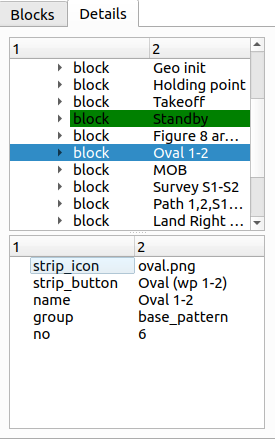
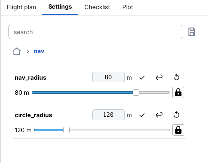
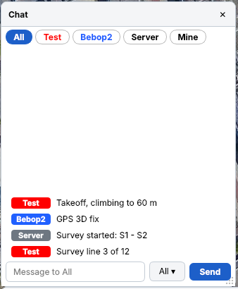
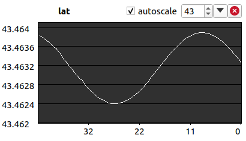

Widgets
There are multiple widgets that you can use. They are described here.
Map 2D
name: map2d
This is a classic 2D map to display waypoints and aircrafts.
A telemetry message can be dropped on it to display a papget.
It can be configured to add buttons in a left and right columns to display other widgets over it. The left column is a rail along the edge of the map: a button opens its widget in a card over the map, a long press keeps it open, and dragging the button moves the widget (see Layout/Tabs).
The cards can be moved over the map by their title bar (double click: back next to the rail) and resized with the grip in their bottom right corner.
Messages from the aircraft, a low battery and lost links are shown as notifications at the top of the map. Messages disappear after a few seconds, warnings stay until fixed or dismissed. Click a notification to select its aircraft and open the chat.
Double click an aircraft to select it; with several aircraft their names show (in their color) when the pointer is on them or when they overlap. Aircrafts > Colors changes the color of an aircraft; aircraft with the same configured color get distinct ones.
Drag a waypoint to move it: a card next to it shows how far it moved and its height above ground, and its old position stays on the map until the aircraft confirms the move.
Map layers has a brightness slider: a slightly darker map makes the aircraft and waypoints stand out.
File > Settings > General can show the battery and link icons next to the aircraft.


map2d, with an overlay widget
Strip
name: strips
Display some data about the drone status.

From left to right, top to bottom:
aircraft name
flight time
current block
battery
altitude AMSL or AGL (click on the icon to change) | altitude diff to target
AP mode
throttle
ground speed / air speed / vertical speed (click on the icon to change)
status for Link, GPS, RC, IMU
PFD
name: PFD
Primary flight display of the selected aircraft: an attitude indicator (roll and pitch), the ground speed (air speed below) on the left, the height above ground on the right with a marker at the target height and the climb rate, the heading below, and the values as text.
Right click on it to choose the view: pilot view (the horizon moves, as in an aircraft) or ground view (the horizon stays level and the aircraft symbol banks and pitches, as seen from the ground).

Commands
name: commands
Basic commands, flight plan buttons and setting buttons.

Flight plan
name: flightplan
Control the flight plan.
The first tab shows the blocks, the current block being highlighted in green with its time. Tap a block, then Go, or double click it to switch to it (amber until the aircraft is in it).

The second tab show the detail of the flight plan, parsed from the XML. Double click on a block to switch to it.

Settings
name: settings
Aircraft settings, one per line with its control: buttons or a list for named values, a switch for on/off, a field for a number. Click the name of a setting to open it: the slider for a number, and Ask (the value on the aircraft, asked again after 3 s without answer), Previous, Initial, Undo and Send. A value outside the range is shown in red and sent after a confirmation. A sent value stays amber until the aircraft confirms it. Search finds settings in all groups; groups with the same name are shown as one. The save button writes the changed settings into the airframe file. File > Settings > General can show every setting open, as in the old layout.

Chat
name: chat
Messages from the aircraft (INFO_MSG) and the ground, one row per message with the sender name in its color;
the time is shown on hover. Messages about a problem (low, lost, fail, …) are highlighted.
With more than one aircraft, a filter shows the messages of one sender.

Plotter
name: plotter
Plot a field of a message.
Switch between plots with menu opened by the arrow down button. You can also add new plots coming from ground messages from there.
Add a plot coming from the telemetry class by dropping a field from the Messages tool (same as for the real-time plotter).
Zoom on the plot with the mouse wheel.
Move the plot up or down by dragging it.
Tune the history time with the spinbox
Remove the plot with the top right button.

This widget can be configured from the layout file. See Layout/Plotter.